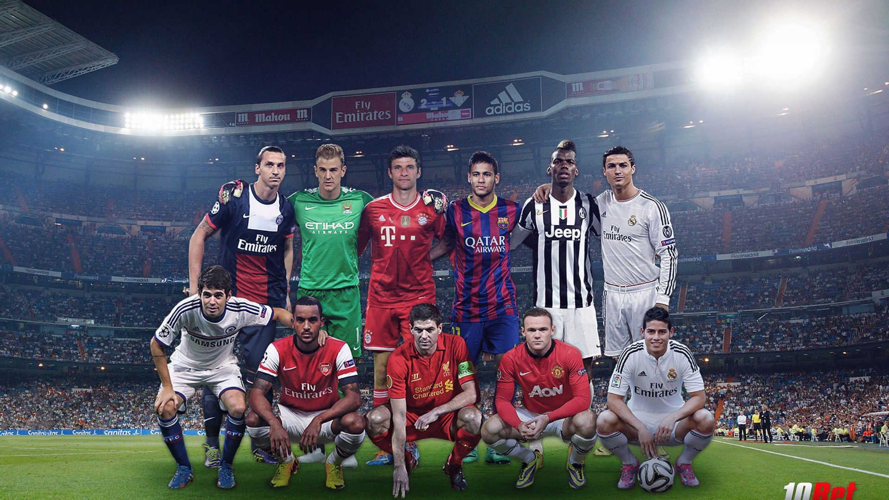
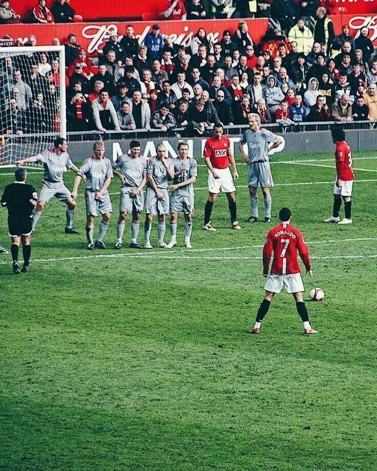
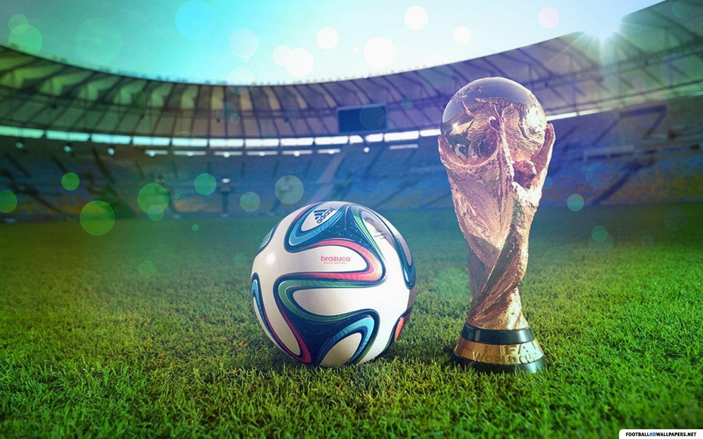

Football, also known as soccer in some parts of the world, is one of the most popular sports globally. It is a game played by two teams of eleven players with a spherical ball. The objective of the game is to score by getting the ball into the opposing goal.
The origins of football can be traced back to ancient civilizations. Various forms of the game existed in different cultures, such as the Chinese game of Cuju and the Greek game of Episkyros. However, the modern version of football began to take shape in England during the 19th century.
The establishment of the Football Association (FA) in 1863 in England marked the official start of modern football. The FA standardized the rules, separating it from rugby football. The first official football match under these rules was played in 1863 between two London teams.
Football quickly gained popularity in England and spread to other countries. By the late 19th and early 20th centuries, it had become a global phenomenon. The formation of international governing bodies like FIFA (Fédération Internationale de Football Association) in 1904 helped to organize and regulate the sport worldwide.
The FIFA World Cup, first held in 1930 in Uruguay, is the pinnacle of international football competition. It has grown to become the most watched and followed sporting event in the world, held every four years and featuring teams from all over the globe.
Women's football has also seen significant growth over the past few decades. The first official Women's World Cup was held in 1991, and the sport has continued to gain popularity and recognition, with more professional leagues and competitions emerging worldwide.
Today, football is played by millions of people of all ages and genders. It is a sport that transcends cultural and geographical boundaries, bringing people together through their love of the game. Major football leagues like the English Premier League, La Liga, and the UEFA Champions League are followed by millions of fans worldwide.
The history of football is rich and varied, reflecting the sport's deep roots in human culture and its universal appeal. From its early beginnings to the present day, football continues to evolve and inspire, uniting people from all walks of life in their passion for the beautiful game.